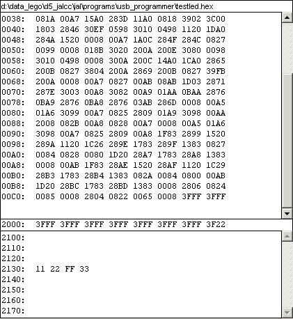
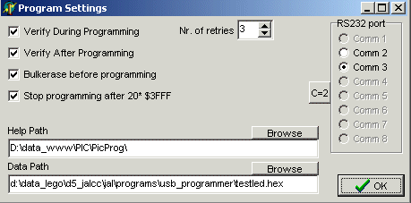
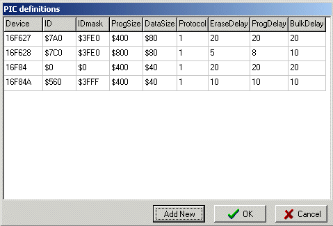

File
Commands
Tools
Help
Misc.

Load Firmware
Firmware Version
July 2002
USB Pic-programmer software
|
File |
Commands |
Tools |
Help |
|
Misc. |
|
|
Load Firmware Firmware Version |
|
The only important thing to remember is that inserting or removing a PIC may only be done when the GREEN led is on (ZIF socket powerless).
|
The topline contains the filename or the devicename, depending on where the last data was read from. The large memo is the program memory. If a complete row is empty ($3FFF) the row is not displayed. The line with address $2000 are the ID words and other fuses. These values can be edited. The bytes, starting at address $2100 are the EEPROM data bytes. These values can be edited. If a complete row is empty ($FF) the row is not displayed. |
 |
On opening of the program, all settings are read form the inifile ("applicationname.ini") and the last hexfile is automatically loaded.
The program can be started automatically from another program (i.e. JAL-IDE), in which case parameters can be passed through the command line:
USB_PICPROG.exe d:\data_test\aap.hex PIC16F84 prog_rs232 - 115200 <handle>
You can omit any parameter. Omit an intermediat parameter by substituting a mins sign "-".
The meaning of the commandline parameters is shown below.
Commands implemented at the moment (not case-sensitive):
program load hexfile + program PIC
prog_run load hexfile + program PIC + start running PIC
prog_rs232 load hexfile + program PIC + start running PIC + RS232 debugging
|
Control by Messages The programmer can also be fully controlled through windows messages. For details about windows messages, see the sources. This is fully implemented in JALcc from v0.14. On the right the settings of JALcc are shown. From within JALcc, you can do everything with just one button (compile and run or F6): compile + download + program + run + debug When JALcc is closed, the programmer is closed automaticcally. |
|
Opens a hex file for reading. After openning the file, all the data is put in the corresponding memo fields.
The hex file must be a INXH8M file format, see below for details. The file may contain program data, config data and EEprom data data.
Saves all information (program, config and data) on the screen in a INXH8M file format.
Closes the program, after storing all settings in the inifile.
Reads program, data (eprom) and configuration memory and places the contents in the corresponding memofields.
If in the program memory a complete row is empty ($3FFF), then this row is not displayed. Also if a complete data memory row is empty ($FF), the line is not shown. Config values are always shown.
The configuration memory ($2000 .. $2007) is both displayed in the corresponding memo and in the corresponding edit- and check-boxes.
The device-ID is checked against the selected device, and if a difference is encountered, a message is placed in the history memo.
Reads only the Device-ID and puts it (only) in the corresponding edit-box.
The device-ID is checked against the selected device, and if a difference is encountered, a message is placed in the history memo.
Writes program, data and configuration memory.
If no device is specified or if the device-ID differs from the selected device, no writing is performed and an error message is displayed.
Verifying of the data is always done during programming. Alternatively verify can also be done after the complete program cycle is done. Although I've never seen a retry with this programmer, there's still the possibility to set a number of retries for each word to be programmed. Devices that are hard to program or of which the code protection bits are set, it's better to perform a bulk erase before programming.
There are 2 programming modi implemented: just write (after detecting memory position was wrong)Â and erase-modify-write. Which mode is choosen depends on if a bulk erase is performed before the programming or not.
Which of the modes is faster, depends on your application:
Normally all of the memory will be programmed, but you set a special mode, where programming is finished as soon as more than 20 consecutive empty places in the hex file are encountered.
If more than 20 errors are encountered, the program is aborted and an error message is displayed.
The device-ID is checked against the selected device, and if a difference is encountered, a message is placed in the history memo.
Erases all, i.e. program, data and fuses.
After an erase cycle, there's no automatic verify cycle.

stop / run / run+rs232
Run releaves the MCLR pin of the PIC, so it will start running.
Run + RS232, is a normal run but transfers the RS232 communication to the programmed PIC, for debugging. The baudrate can be set independantly of the programmers baudrate. An extra window is opened, which acts like a terminal to the programmed PIC, both serial receive and serial transmit can be controled. Of course in this mode there's no control anymore of the programmer.
But you can regain control, by pressing the Stop button.
|
Verifying during and / or after programming can be selected individually. Normally you'll only choose for "during" because this will cost no extra time and above you can have retries. There's no need for verifying afterwards. The helppath is the path, where this file is stored (normally the program directory). Datapath is the path where your hex files are normally stored. If you read a hex file from a diferent directory, this path will automatically be addapted. Clicking on the commport lets you select an RS232 port. All settings are stored in the inifile ((applicationname.ini"). |
 |
Shows this help text in your own default browser (if the path of this file is set right).
|
Tools / PIC Definitions / ... ID stands for the device-ID. ID-mask are the bits that take active part in the device-ID (the newer types, some bits are used for the revision number) ProgSize and DataSize speaks for themself. Protocol, some details of the programming algoritm, see for specifications below. EraseDelaythe maximum value (in msec) of a erase part of a read-modify-write action of a single word. ProgDelaythe maximum value (in msec) of a program part of a read-modify-write action of a single word. BulkDelaythe maximum value (in msec) of a bulkerase. DataErase is supposed to have the same delay time. You can add new devices just by walking with the cursor to the bottom of the table (or by pressing button "Add New"). Numbers be inserted decimal or hexa-decimal (with a preceeding '$' sign). Enter-key can be used to step through the fields of the table. |
 |
|
1 |
This is the normal base protocol, for 16F62x , 16F87x , etc |
|
2 |
This protocol save the oscillator calibration (last byte in progmem) and bandgab bits (msbits of 2007) 12F629 , 12F675 , etc |
|
V 1.6xx |
|
|
V 1.5 |
!!!! Needs firmware V2 (for full functionality) !!!! |
|
V 1.4 |
|
|
V 1.3 |
|
|
V 1.2 |
|
|
V1.1 22-10-2002 |
|
|
V1.0 24-07-2002 |
|
|
V3 |
|
|
Hex file of the firmware in intel Hex-8 format The complete firmware is written in JAL. For more info about JAL, see Wouter's page |
|
|
Executable PC program to control te programmer. All sources are written in Delphi-5. |
|
|
Get the latest USBMOD1 driver for your specific operating system. For most operating systems you' can download 2 different versions, a PnP and a non-PnP. I've the best experience with the non-PnP drivers (both win98 and winXP). |
|
|
If you want the use the programmer with full support in JALcc, download the latest version here. (You need at least version 0.14) |